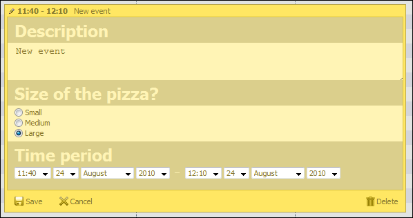

Radio
Required library edition: 
Required library file: dhtmlxscheduler_editors.js
This type of editor creates a set of radio buttons to choose from. Buttons may be aligned vertically or horizontally. checkbox in the header of the section. Body of the section is not displayed.
Here's the code snippet of how it could be added:
var pizza_size = [ { key: 1, label: 'Small' }, { key: 2, label: 'Medium' }, { key: 3, label: 'Large' } ]; scheduler.config.lightbox.sections=[ // other sections { name:"selectme", height: 48, options: pizza_size, map_to:"radiobutton_option", type:"radio", vertical: true } ];
Following options are used:
- name - name of the editor
- height - height of an editor
- options - elements which will be displayed in the editor
- map_to - property of the event maped to the editor
- type - type of the editor
- vertical - vertical placement (true/false), by default false
Example of how such editor looks like:

Copyright © 1998-2009 DHTMLX LTD.
All rights reserved.
All rights reserved.